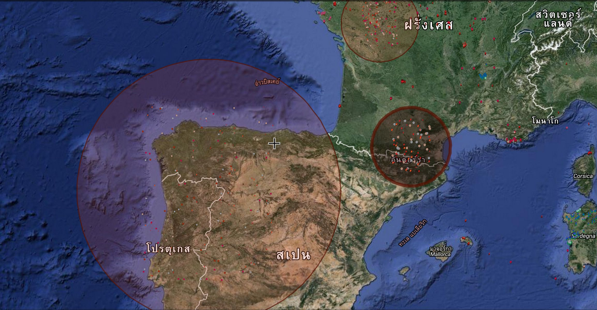
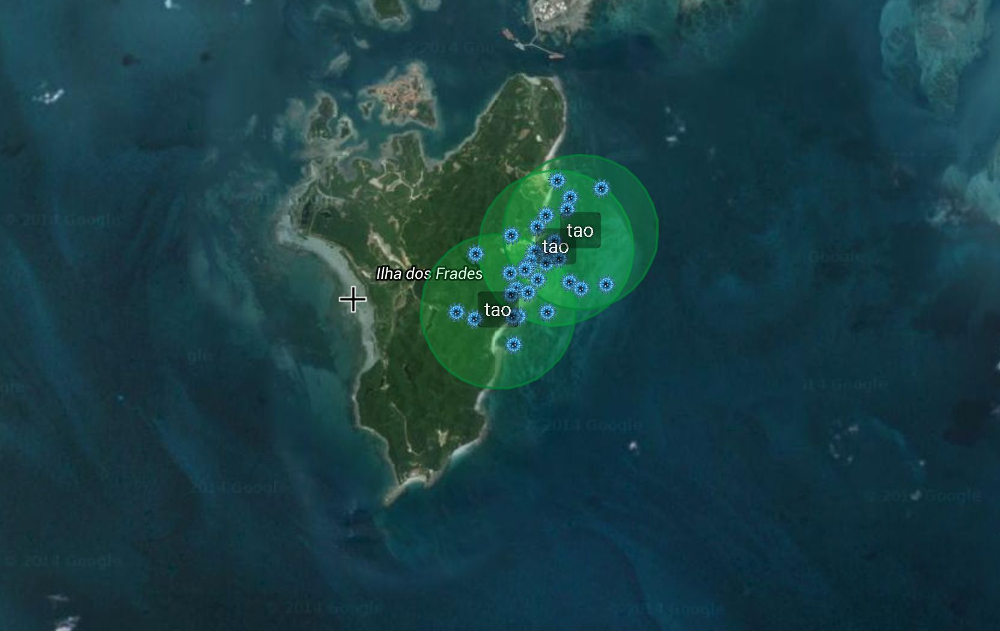
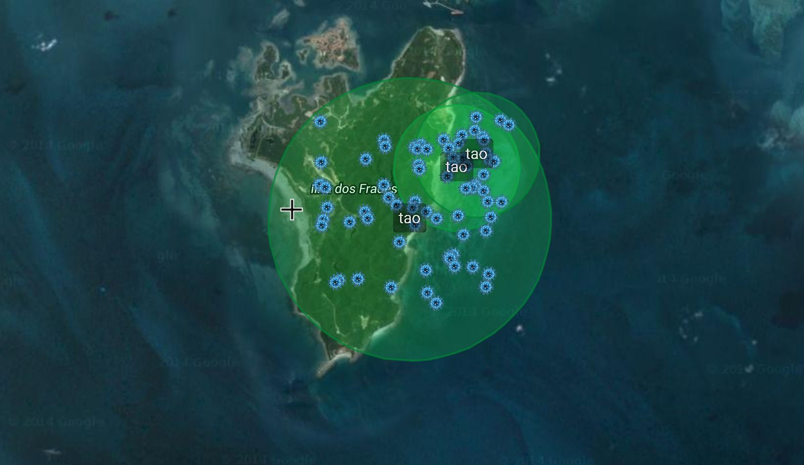
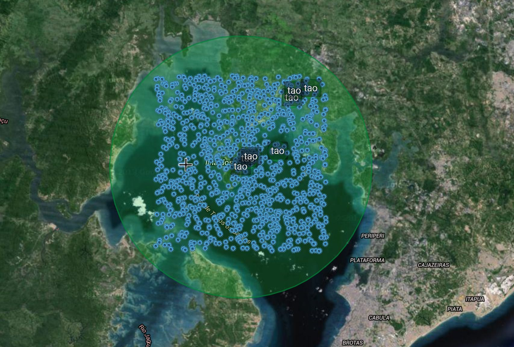
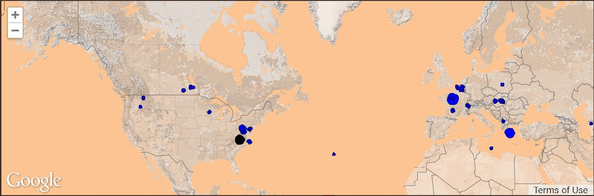

Seize the planet with virus
▼ scroll down ▼

Explore the planet
Planet of Cells allows you spawn virus on different places on the planet. Each of virus cells you spawn on the surface is reproducing as the time goes. It may take some time to expand the virus citizen from several cells to thousands.
Few minutes after spawn ...

Keep them reproducing naturally ...

As time goes, virus cells double themselves repeatedly
and they can expand into a large empire.

and they can expand into a large empire.
Larger cell territory, more power it gains
- Larger cell territory swallows other nearby territories as it grows and overlaps.
- Larger cell territory won't get merged by other nearby foreign cell territories.
- Larger cell territory reproduces even faster.
Capitalize a territory
 When a terrtitory becomes a capital of a city, its power and ability are raised to the highest level. The owner of a capital territory is periodically rewarded by some coins (and some good items).
When a terrtitory becomes a capital of a city, its power and ability are raised to the highest level. The owner of a capital territory is periodically rewarded by some coins (and some good items).
Capital territories are not constrained by the size limitation. It can grow as large as it can. Only up to one capital territory is allowed to be established per one city.

Conquering the entire city would be easy within minutes but to conquer the entire continent, it would ultimately take you lifetime to go. Other great players might not let you pass. Try it yourself.